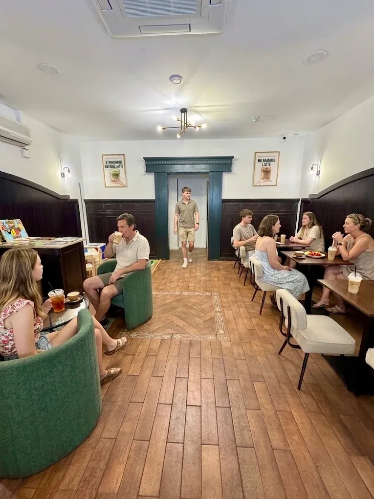
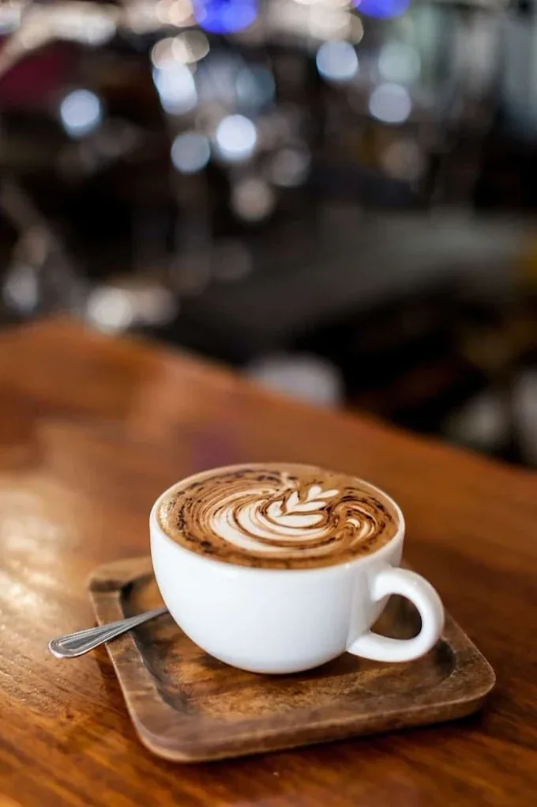
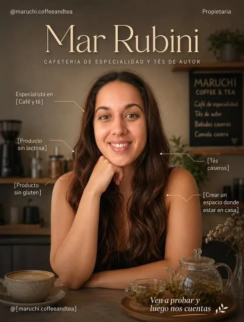

Nuestra historia
El mar, tan cerca.
Castelldefels tiene playa a un paso y una calle tranquila donde nos instalamos para hacer una sola cosa bien: café bueno, servido sin prisa.


Mar + Uchi
«Mar» y «Uchi»
El nombre lleva el de nuestra propietaria, Mar, junto a «uchi» (家), la palabra japonesa para «hogar». Mar también significa mar en español — una coincidencia bonita, a un paso como estamos del Mediterráneo — pero el origen es mucho más simple y más personal: es su nombre, y este es su sitio. Es justo lo que buscamos que sientas al entrar: un lugar cercano, sin protocolo, donde el café se trata con el mismo cuidado que el té.
Trabajamos con grano de especialidad y tés de origen seleccionados taza a taza, y dejamos que el espacio haga el resto: sofás donde hundirse, madera cálida y tiempo de sobra para quedarse.
Café de especialidad · Tés de origen · Un sitio para quedarse

Quién está detrás
Mar Rubini
«Quería crear un espacio donde estar como en casa — café de especialidad, tés caseros y sitio para quedarte el tiempo que haga falta.»
Mar es especialista en café y té, y trabaja para que la carta tenga siempre opciones sin gluten, sin lactosa y veggie. Todo lo que sale de la barra lleva su sello: cuidado, sin prisa y con ganas de que vuelvas.
El local
Sofás verdes, madera oscura y luz que entra desde la calle.
Por dentro, Mar.Uchi combina paneles de madera oscura con paredes claras, sillones verdes para sentarse en grupo y mesas altas junto a la barra. Un espacio pensado tanto para el café rápido de camino a la playa como para quedarse con amigos toda la tarde.
Te esperamos
Ven a conocernos.
Carrer d'Arcadi Balaguer, 36-38 · Castelldefels